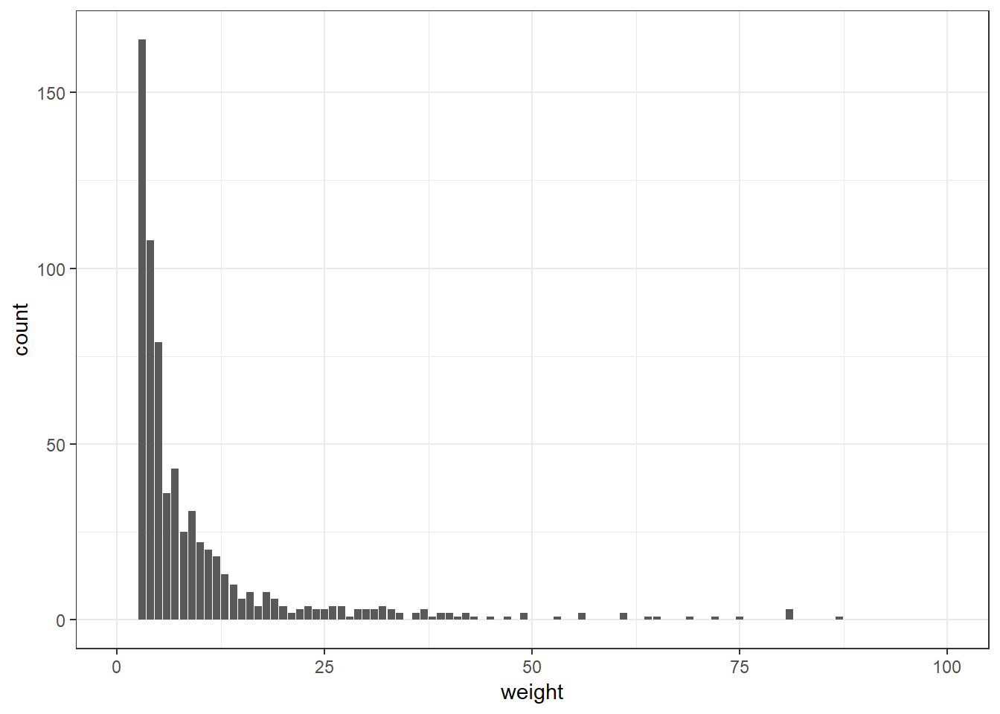
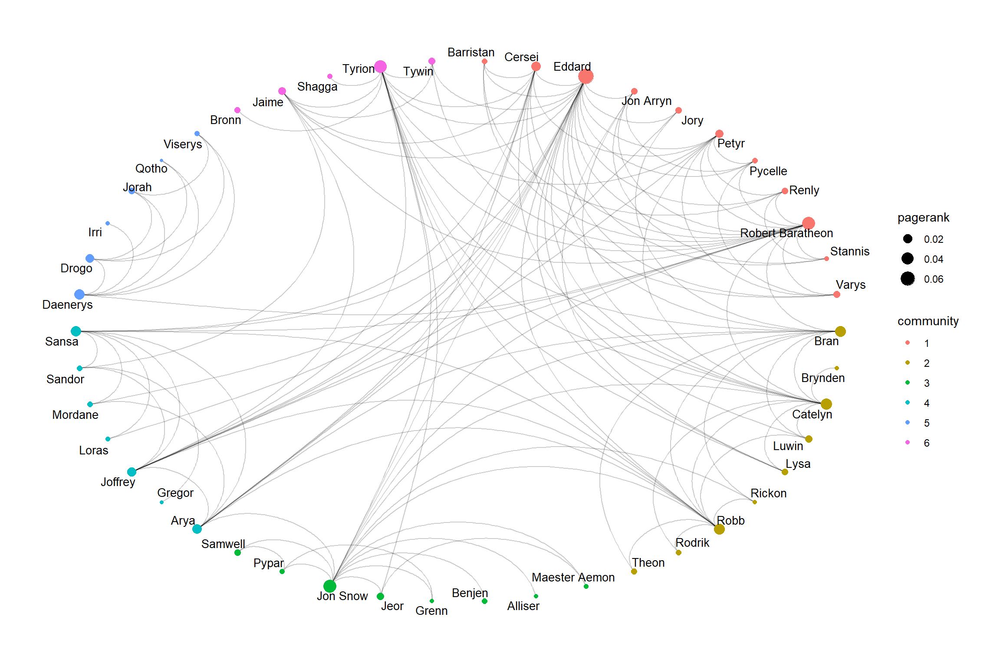
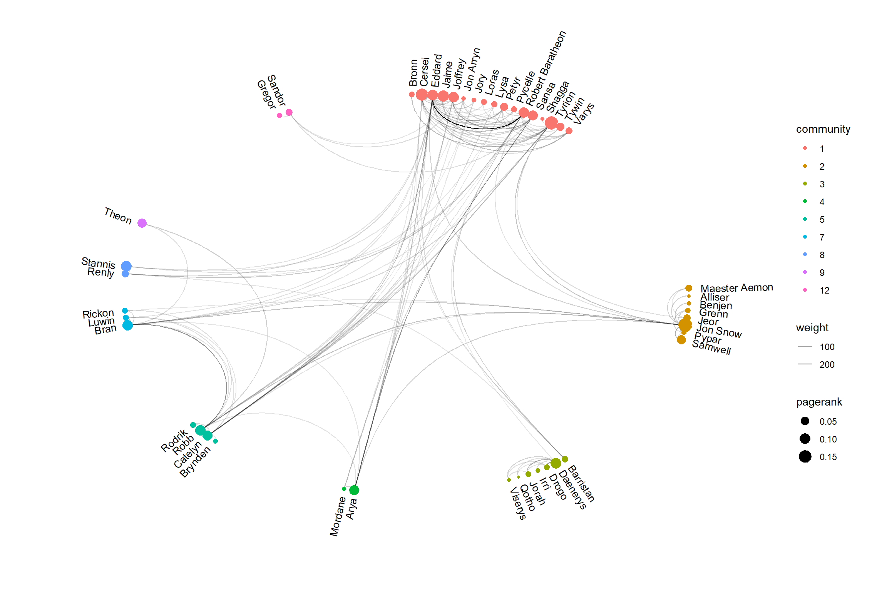
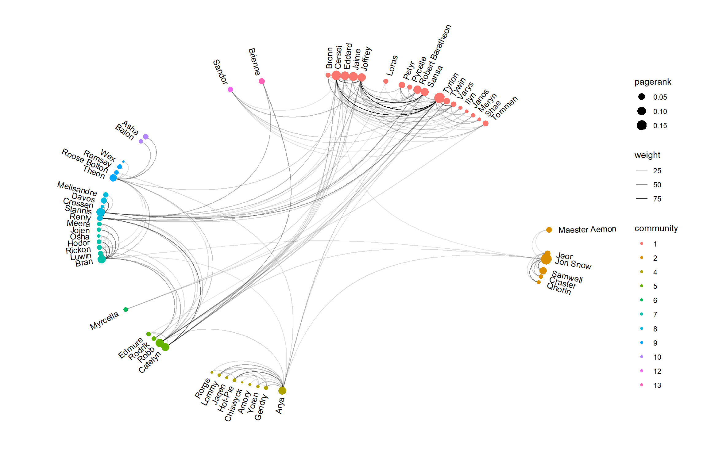
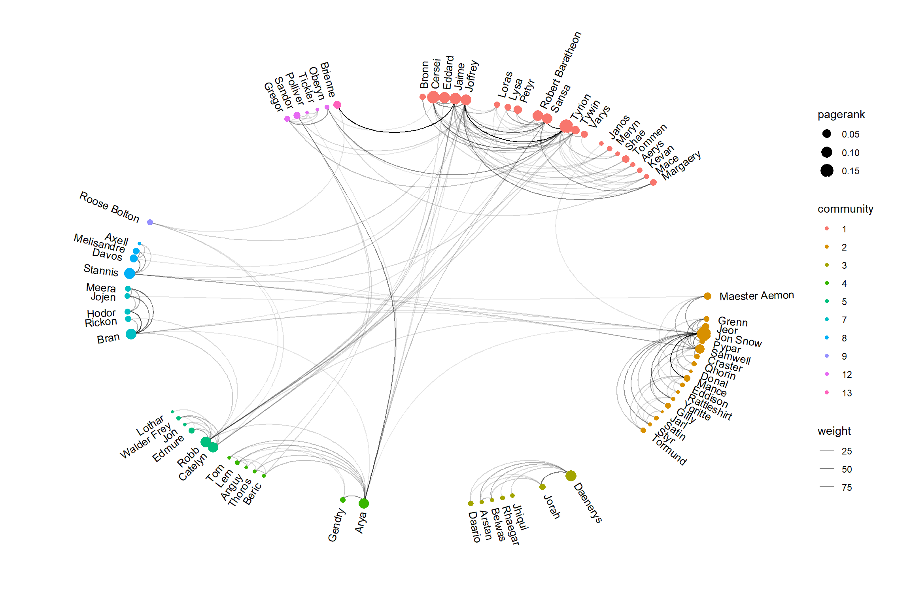

While waiting for the winds of winter to arrive, there is plenty of time to revisit the 5 books. One of my favourite aspects of the series is the character and world building. As the song of ice and fire universe is so big, many characters are mentioned in passing while the major characters meet each other only occasionally. I thought it would be interesting to see how various characters are connected and how that progresses through the series. This evolved into a mini project featuring network analysis on the series. As it turns out, many people think likewise, and there are numerous network analysis flying around. This post is different in at least three ways: It focuses on the book rather than the game of thrones HBO series, it features an analysis of the entire series, not just a single book, and finally it features some very cool network plots (and shows you how to do it as well).
This analysis is done in R and uses two wonderful packages by Thomas Pederson. Tidygraph provides a tidy API to the popular igraph package. This makes it easy to experiment with network algorithms especially if one is already familiar manipulating tibbles with the dplyr syntax. Ggraph extends ggplot to network graphs.
Dataset
Data is obtained from Andrew Beveridge. The dataset is unique in that it is actually an encoding of the actual text itself. The data is available as an edge list which is a list of character pairs and the number of times their names appeared within an interval of 15 words in a particular book. Thankfully, the hard work of cleaning the dataset has been done and we can just focus on analysing the data.
Analysis
Let us first import the packages that would be used for this analysis. Since there are certain algorithm that involve random initialisations, we set a seed to make the analysis replicable.
Next, we read in the asoiaf files into two dataframe one containing all the nodes/vertices of the graph and the other the edges/connections.
node_files <- list.files(path = "data/", pattern = "nodes")
edge_files <- list.files(path = "data/", pattern = "edges")
node_df = do.call(rbind, lapply(paste0("data/",node_files), function(x) read_csv(x)))
edge_df = do.call(rbind, lapply(paste0("data/",edge_files), function(x) read_csv(x)))Let’s take a look at how the datasets look like:
node_df## # A tibble: 1,340 x 2
## Id Label
## <chr> <chr>
## 1 Addam-Marbrand Addam Marbrand
## 2 Aegon-I-Targaryen Aegon I Targaryen
## 3 Aemon-Targaryen-(Maester-Aemon) Aemon Targaryen (Maester Aemon)
## 4 Aerys-II-Targaryen Aerys II Targaryen
## 5 Aggo Aggo
## 6 Albett Albett
## 7 Alliser-Thorne Alliser Thorne
## 8 Alyn Alyn
## 9 Arthur-Dayne Arthur Dayne
## 10 Arya-Stark Arya Stark
## # ... with 1,330 more rowsedge_df## # A tibble: 3,909 x 5
## Source Target Type weight book
## <chr> <chr> <chr> <int> <int>
## 1 Addam-Marbrand Jaime-Lannister Undirect~ 3 1
## 2 Addam-Marbrand Tywin-Lannister Undirect~ 6 1
## 3 Aegon-I-Targaryen Daenerys-Targary~ Undirect~ 5 1
## 4 Aegon-I-Targaryen Eddard-Stark Undirect~ 4 1
## 5 Aemon-Targaryen-(Maester-Aemo~ Alliser-Thorne Undirect~ 4 1
## 6 Aemon-Targaryen-(Maester-Aemo~ Bowen-Marsh Undirect~ 4 1
## 7 Aemon-Targaryen-(Maester-Aemo~ Chett Undirect~ 9 1
## 8 Aemon-Targaryen-(Maester-Aemo~ Clydas Undirect~ 5 1
## 9 Aemon-Targaryen-(Maester-Aemo~ Jeor-Mormont Undirect~ 13 1
## 10 Aemon-Targaryen-(Maester-Aemo~ Jon-Snow Undirect~ 34 1
## # ... with 3,899 more rowsOn closer examination, it turns out that there is still some data cleaning required. The labels are not unique to each Id and are too long for visualisation purposes. I remove the duplicates and do a simple relabeling operation to have a nicer looking label for the final product. Many characters in the series have similar first names. In most circumstances it should be clear which major character is being referred to (e.g. Brandon Stark vs Brandon the builder). In other cases where it might be confusing, I manually corrected the labels.
We also prepare the edge_df dataset. Tidygraphs likes one column of the edge dataset to be named ‘from’ and the other to be named ‘to’, so we shall follow the convention. Note: The naming does not necessarily mean that the edges are directed. We can pass in an option to specify that when building the graph dataset.
node_df <- node_df %>%
group_by(Id) %>%
filter(row_number()==1) %>%
mutate(Label_short = word(Label, 1)) %>%
mutate(Label_short = case_when(
Label == 'Aemon Targaryen (Maester Aemon)' ~ 'Maester Aemon',
Label == 'Aegon I Targaryen' ~ 'Aegon I Targaryen',
Label == 'Aegon V' ~ 'Aegon V',
Label == 'Brynden Rivers' ~ 'Bloodraven',
Label == 'High Sparrow' ~ 'High Sparrow',
Label == 'Roose Bolton' ~ 'Roose Bolton',
Label == 'Walder Frey' ~ 'Walder Frey',
Label == 'Jon Arryn' ~ 'Jon Arryn',
Label == 'Jon Snow' ~ 'Jon Snow',
Label == 'Robert Arryn' ~ 'Robert Arryn',
Label == 'Robert Baratheon' ~ 'Robert Baratheon',
TRUE ~ Label_short
))
edge_df <- edge_df %>%
filter(!is.na(book)) %>%
rename(from = Source, to = Target) %>%
select(from, to, weight, book)For a start, let us examine the network connections in the first book. Here, I plot the distribution of joint occurrences between characters.
book1 = edge_df %>%
filter(book==1)
### Plot distribution of weights
book1 %>%
ggplot(aes(x=weight)) +
geom_bar() +
xlim(0,100) +
theme_bw()
Typical of network graphs, the plot shows a power law like distribution, with most character pairs connected by a few joint mentions and a few central characters being mentioned repeatedly in the same context. I truncated the x-axis to remove certain outliers, but if you are keen on finding out which characters were most commonly mentioned next to each other…
book1 %>% arrange(desc(weight))## # A tibble: 684 x 4
## from to weight book
## <chr> <chr> <int> <int>
## 1 Eddard-Stark Robert-Baratheon 291 1
## 2 Bran-Stark Robb-Stark 112 1
## 3 Arya-Stark Sansa-Stark 104 1
## 4 Daenerys-Targaryen Drogo 101 1
## 5 Joffrey-Baratheon Sansa-Stark 87 1
## 6 Eddard-Stark Petyr-Baelish 81 1
## 7 Jeor-Mormont Jon-Snow 81 1
## 8 Jon-Snow Samwell-Tarly 81 1
## 9 Daenerys-Targaryen Jorah-Mormont 75 1
## 10 Cersei-Lannister Robert-Baratheon 72 1
## # ... with 674 more rowsWe can construct our network using the tbl_graph function. As a from-to character pair captures the joint occurrence, it makes sense to model the relations as an undirected graph. I subset node_df to include only the relevant characters mentioned in the first book.
df <- tbl_graph(nodes = node_df[node_df$Id %in% union(book1$from, book1$to),],
edges = book1,
directed = FALSE)Now, we can play around with the network using the tidygraph package. It has a nice API where one can perform certain operations on either the nodes or edges by using the activate function. Most of the dplyr functions are also supported. The major one missing is the summarise function but I will show a short work around for that when we need it later on.
We are keen on mapping the relationships between the important characters within the book. How do we calculate the importance of a character? One way of doing that is through the pagerank measure, also known as the google search engine ranking algorithm. The code below filters characters who are in the top quartile of pagerank score. In addition, we keep only the main connections between characters, those that are in the top quartile of weight score.
df2 <- df %>%
activate(nodes) %>%
mutate(pagerank = centrality_pagerank(weights = weight, directed = FALSE),
degree = centrality_degree(weights = weight),
pagerank_75pc = quantile(pagerank, 0.75)) %>%
activate(edges) %>%
filter(weight >= quantile(weight, 0.75)) %>%
activate(nodes) %>%
filter(pagerank > pagerank_75pc) %>%
filter(!node_is_isolated())To visualise the network, we can use the ggraph package. The two main additional geoms are the geom_edge_* and the geom_node_* functions which control the visualisation of the edges and nodes respectively. In addition, there is a layout argument which allows a variety of popular configurations to be displayed. Here, I use the Fruchterman-Reingold algorithm which is one of the more popular force-directed algorithms out there.
ggraph(df2, layout = "fr") +
geom_edge_link(color='red') +
geom_node_point() +
geom_node_text(aes(label = Label_short), repel = TRUE) +
theme_graph()
Let us try to encode more information by finding the communities within graph.
df3 <- df2 %>%
mutate(component = group_components(),
community = as.factor(group_infomap(weights = weight))) %>%
group_by(component) %>%
mutate(component_size = n()) %>%
filter(component_size > 5) %>%
ungroup() %>%
arrange(community)The spider-web in the middle makes it difficult to make much sense of the connections. An alternative way of visualising the connections is using a circular layout. We can do this easily by specifying a linear layout and pass circular = TRUE in the argument. We encode the pagerank information as the size of the nodes and color them according to the communities which they belong to.
ggraph(df3, layout = "linear", circular=T) +
geom_edge_arc(alpha=0.2) +
geom_node_point(aes(color = community, size = pagerank)) +
geom_node_text(aes(label = Label_short), repel = TRUE, size = 3.5) +
theme_graph()
The communities discovered by the algorithm match fairly well to the locations where the characters spend most of their time in. We have a king’s landing community with Eddard Stark, Robert Baratheon and Varys; as well as a Winterfell community with Catelyn, Bran and Robb. We can also easily pick up the influential players in the graph. Daenerys, is the only link between Essos and the rest of Westeros. Tyrion and the Stark family (except Rickon) also rank highly in pagerank score and facilitate the connections between the other major characters in the first book.
ASOIAF Network
We want to replicate the above analysis to the rest of the books, so let us code a function to generate the clean network dataframe for each selected book. We will call the function process_graph. I included the quantile cut-off as a variable as well to make it easy to adjust the final plot. 0.75 seems like a reasonable cut-off and includes most of the key characters in the books. In the code below, I create an all_graph list which contains all the 5 books processed as tidygraph dataframes.
process_graph <- function(node_df, edge_df, book_num, q = 0.75){
book = edge_df %>%
filter(book==book_num)
df <- tbl_graph(nodes = node_df[node_df$Id %in% union(book$from, book$to),],
edges = book,
directed = FALSE)
df2 <- df %>%
activate(nodes) %>%
mutate(pagerank = centrality_pagerank(weights = weight, directed = FALSE),
degree = centrality_degree(weights = weight),
pagerank_qpc = quantile(pagerank, q)) %>%
activate(edges) %>%
filter(weight >= quantile(weight, q)) %>%
activate(nodes) %>%
filter(pagerank > pagerank_qpc) %>%
filter(!node_is_isolated()) %>%
select('Id', 'Label', 'Label_short', 'pagerank') %>%
rename(!! paste0('pagerank',book_num) := pagerank)
df3 <- df2 %>%
mutate(component = group_components()) %>%
group_by(component) %>%
mutate(component_size = n()) %>%
filter(component_size > 5) %>%
ungroup() %>%
select(-component, -component_size)
return(df3)
}
all_graphs <- lapply(1:5, function(x) process_graph(node_df, edge_df, book_num=x, q=0.75))There are two additional complications in extending this analysis to all the five books:
How do we find out the important nodes across all 5 books and determine the relevant communities?
How do we build a consistent layout to visualise across datasets.
Let us address the first complication. To do so, we need to aggregate information across the 5 books. We can use the graph_join function which works in a similar manner as the dplyr *_join commands.
full_graph <- Reduce(function(...) graph_join(..., by = c('Id', 'Label', 'Label_short')), all_graphs) %>%
convert(to_undirected)This produces a dataset with the information across all 5 books. Some of the edges are duplicated and we need to sum up the weights across these edges. Normally one can use the summarise function in dplyr to do this aggregation. Unfortunately, this is not supported in tidygraph. I opted to convert the edges to a dataframe using the as_tibble command before merging it back to the edge dataframe. The trick is to remove duplicated edges in the tidygraph object before doing the merge.
full_graph_edges <- full_graph %>%
activate(edges) %>%
as_tibble() %>%
group_by(from, to) %>%
summarise(weight = sum(weight), book = first(book))
full_graph <- full_graph %>%
activate(edges) %>%
filter(!edge_is_multiple()) %>%
select(from, to) %>%
left_join(full_graph_edges, by = c('from', 'to'))We can then run the community algorithm and sum up the pagerank score across all the books to get a measure of the importance of a particular character.
full_graph <- full_graph %>%
activate(nodes) %>%
mutate(community = as.factor(group_infomap(weights = weight))) %>%
arrange(community)
full_graph <- full_graph %>%
mutate_at(vars(contains('pagerank')), funs(if_else(is.na(.), 0, .))) %>%
mutate(pagerank = pagerank1 + pagerank2 + pagerank3 + pagerank4 + pagerank5)Returning back to the issue of plotting, we want to fix the locations of the nodes to be the same across books. This would make comparisons easy. My solution is adapted from the following two github issues (1, 2). We create a manual layout using the full graph and write a plot_graph function that merges essential information about the nodes back to the network data frame.
There is one final issue to settle. The geom_node_text function has a repel argument that uses the ggrepel package to decide on the placement of the text. Normally the default options works very well for a scatterplot but in this case we have a circular plot and we do not want the text in the interior of the plot. Additionally, since we have many nodes, there is a tendency for ggrepel to repel the labels far away from the node position. One possible solution is to fix the position of the labels to the outside of the circle and angle the text such that they point towards the center of the circle. I adapted the following solution and used the hjust alignment argument to coerce the labels to form an outer circle.
full_layout <- create_layout(graph = full_graph, layout = "linear", circular = T)
max(as.numeric(full_layout$community))## [1] 14xmin <- min(full_layout$x)
xmax <- max(full_layout$x)
ymin <- min(full_layout$y)
ymax <- max(full_layout$y)
plot_graph <- function(graph) {
graph <- graph %>%
left_join(full_layout[full_layout$Id %in% V(graph)$Id, c('x', 'y', 'Id', 'community', 'pagerank')],
by = 'Id')
graph %>%
ggraph(layout = "manual", x = x, y = y, circular = T) +
geom_edge_arc(aes(alpha = weight)) +
geom_node_point(aes(color = community, size = pagerank)) +
# data = filter(graph %>% as_tibble(), x>0),
geom_node_text(aes(label = Label_short, x = x * 1.04, y = y* 1.04,
angle = ifelse(atan(-(x/y))*(180/pi) < 0,
90 + atan(-(x/y))*(180/pi),
270 + atan(-x/y)*(180/pi)),
hjust = ifelse(x > 0, 0 ,1)), size = 3.5) +
theme_graph() +
expand_limits(x = c(xmin-0.2, xmax+0.2), y = c(ymin-0.2, ymax+0.2))
}And here is how each book looks:
plot_graph(all_graphs[[1]])
plot_graph(all_graphs[[2]])
plot_graph(all_graphs[[3]])
plot_graph(all_graphs[[4]])
plot_graph(all_graphs[[5]])